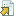
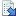
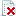

Goto URL
No URL matches the current page
Import onto Page
Close
From
to
Reset
characters translated today
Set
Close
Nothing to see here, move along
Hide this donation request permanently (always available on Options page)
Translation by
Speech by
Speech by